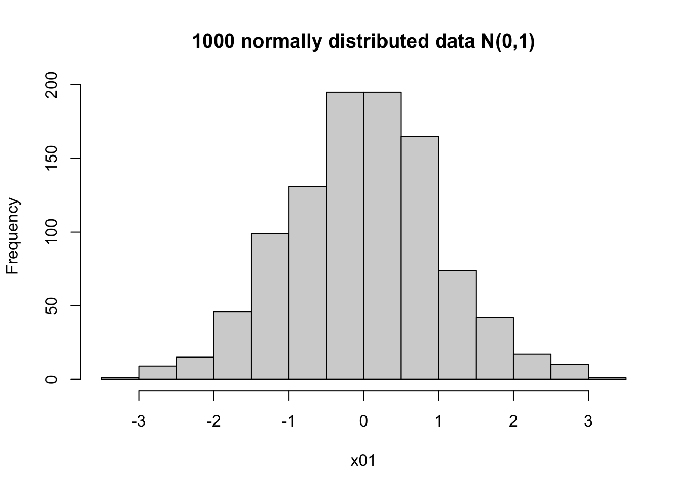
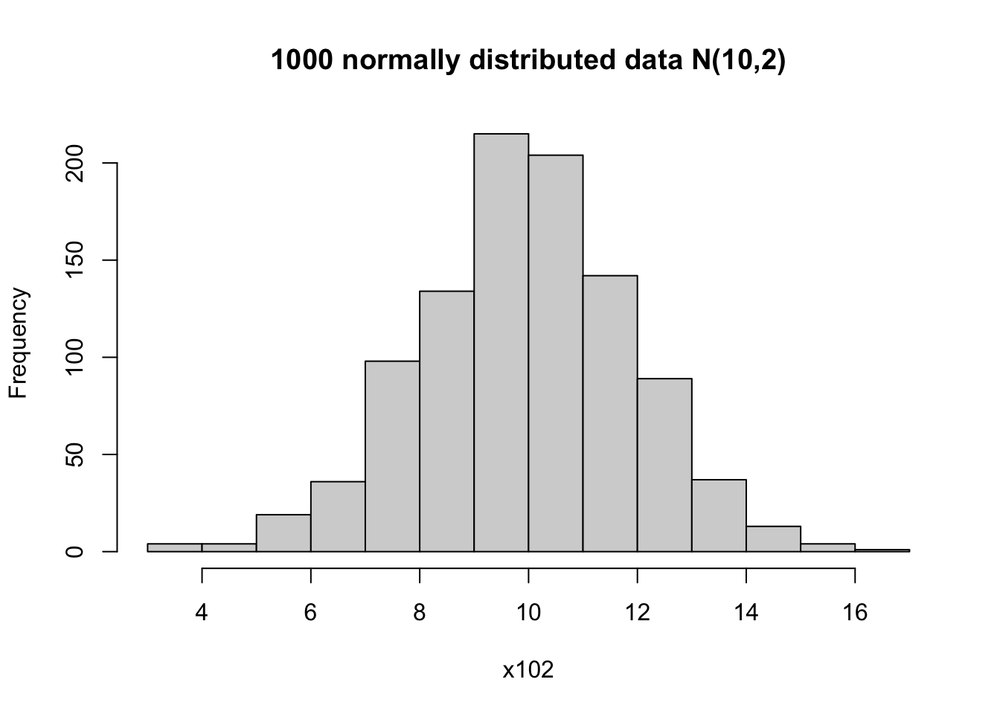
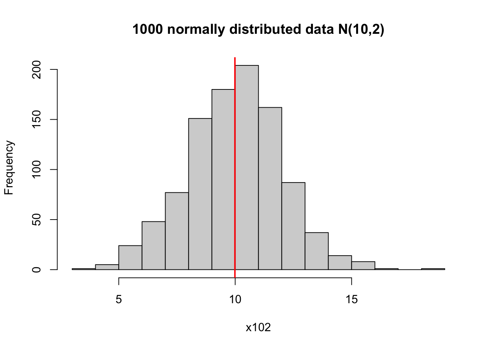

# having 0 Heads in 2 coin tosses:
choose(n=2,k=0) # (0,0)[1] 1# having 1 Heads in 2 coin tosses:
choose(n=2,k=1) # (0,1), (1,0)[1] 2# having 2 Heads in 2 coin tosses:
choose(n=2,k=2) # (1,1)[1] 1On this page you will find some examples and code for probability distributions.
In your take-home exam, you will NOT be tested on programming (e.g. simulation) or theoretical results. Content on this page is to help you understand the math behind topics in the next days.
A random sample is random. For example, if you throw a 6 sided dice twice, you will possibly have different outcomes. This process can be simulated with the line below.
You can copy and paste this line to your R console, and run it a few times. Alternatively, click on Run Code button below a few times. You should see different results every time.
By setting the seed in programming, it means you fix the process of the random data generator. This ensures that your results is reproducible regardless of when you run the line below.
You can try to set a different value of the seed number, say set.seed(20) and see what happens!
The randomness in the data generating process implies that if you simulate two datasets with the same parameters, the output could be different, even though both are from the same theoretical distribution.
Binomial distribution has two parameters: \(n\) and \(p\). In R, they are referred to as size and prob. Consider the following process:
The probability associated with each possibility can be described by binomial distribution (n,p).
You will see the notation \({n \choose k}\) in the formula of binomial distribution. This is the binomial coefficient, it is the number of ways to pick up \(k\) elements from a total of \(n\); or, having \(k\) number of successes in \(n\) experiments.
In 2 coin tosses, each one toss can have 2 outcomes (write as 1, 0 as Heads and Tails). There are in total 4 possibilities: (0,0), (0,1), (1,0), (1,1)
The number of scenarios corresponding to zero 1, one 1, two 1’s are (1, 2, 1). In R, you can use commmand choose(n, k) to find these three values.
# having 0 Heads in 2 coin tosses:
choose(n=2,k=0) # (0,0)[1] 1# having 1 Heads in 2 coin tosses:
choose(n=2,k=1) # (0,1), (1,0)[1] 2# having 2 Heads in 2 coin tosses:
choose(n=2,k=2) # (1,1)[1] 1Similarly, if you want to find out in 3 coin tosses, how many scenarios (or combinations) can give zero, one, two and three 1’s,
# having 0, 1, 2, 3 Heads in three coin tosses:
choose(n=3,k=0) # (0,0,0)[1] 1choose(n=3,k=1) # (1,0,0), (0,1,0), (0,0,1)[1] 3choose(n=3,k=2) # (1,1,0), (1,0,1), (0,1,1)[1] 3choose(n=3,k=3) # (1,1,1)[1] 1We can start with simulating 500 random sample from a binomial distribution whose parameters (n,p) are (1, 0.5). This is like tossing a fair coin once (n=1), whose probability of having Heads and Tails are 50/50 (p=0.5). We toss it 500 times, and record each time what outcome it is.
We can print out the first 20 results, and visualize all the frequencies from the 500 outcomes.
Here you see that the frequency for 1 and 0 outcomes are very close to 0.5, even though sometimes there are slightly more 1 than 0 and vice versa.
The X-axis should be only two discrete values - 0 and 1; and nothing between.
For a random variable \(X\) and parameters \(n, p\), the formula of binomial distribution is
\[P(X = k) = {n \choose k}p^{k}(1-p)^{n-k}\] Here \(k\) is the number of success (1’s) among \(n\) experiments. For example, \(n=5\), the possible range of \(k\) could be 0, 1, 2, 3, 4, 5 successes. The number of successes is affected by the probability \(p\) for each one experiment - in general, the higher \(p\) is, the more likely you get larger number of successes. This can be seen from the histogram.
You can experiment with different combinations to see the effect of size and prob, N and P. Try the following combinations:
In the lecture we used 8 patient contracting a disease with probability of 0.15 as example. We computed the probability of having 2 patient getting the disease. Let \(X\) be the random variable denoting the number of patients having disease; \(P(X = 2)\) is when this number equals to 2.
Using the formula of binomial distribution, plugging the numbers:
\[P(X = 2) = {8 \choose 2}0.15^{2}(1-0.15)^{8-2}\] In R,
# probability: p=0.15
# total patients: n=8
# x (or k) = 2, 2 getting disease
p <- 0.15
choose(8, 2)*p^2 * (1-p)^(8-2)[1] 0.2376042This is equivalent to using the R command rbinom(x, size, prob),
dbinom(2, size = 8, prob = 0.15)[1] 0.2376042The normal distribution has a bell-shape, and is symmetrical. In a simulation, it might not look perfectly symmetrical; but when you have a large enough sample, it should be close enough to a bell-shaped histogram.
# two parameters: mean and sd
x01 <- rnorm(1000, mean = 0, sd = 1)
hist(x01, main = '1000 normally distributed data N(0,1)')
x102 <- rnorm(1000, mean = 10, sd = 2)
hist(x102, main = '1000 normally distributed data N(10,2)')
You can find the summary statistics for the simulated data.
# check the summary
summary(x102) Min. 1st Qu. Median Mean 3rd Qu. Max.
3.983 8.615 10.065 9.988 11.348 18.008 # mean
mean(x102)[1] 9.988159# variance and sd
var(x102) # (sd(x102))^2 # these two are equivalent[1] 4.108443sd(x102)[1] 2.026929It can be helpful to visualize the mean on top of the histogram.
# can plot the mean on the histogram to indicate the center
hist(x102, main = '1000 normally distributed data N(10,2)')
# v means verticle line, lwd means line width
abline(v = mean(x102), col = 'red', lwd = 2)
For a standard normal distribution, its 2.5% and 97.5% quantiles (\(\pm 1.96\)) are frequently used. This means that
# pnorm finds the probability below a value
p1 <- pnorm(-1.96, mean = 0, sd = 1)
p2 <- pnorm(1.96, mean = 0, sd = 1)
c(p1, p2) # print the values[1] 0.0249979 0.97500211-p1 # equal to p2[1] 0.9750021qnorm(0.025, mean = 0, sd = 1) # 2.5% quantile[1] -1.959964qnorm(0.975, mean = 0, sd = 1) # 97.5%[1] 1.959964When you have data in groups, you can plot them in a bar plot.
dd <- data.frame(prob = c(0.03, 0.14, 0.13, 0.38, 0.33),
n = c(3,16,15,44,38))
rownames(dd) <- c('0-17', '18-24', '25-34', '35-64', '65+')
# we can plot two graphs side by side
# set parameter: 1 row 2 columns
par(mfrow = c(1, 2))
# bar plot for counts
barplot(dd$n, names.arg = rownames(dd),
main = 'Number of killed for road accidents')
# bar plot for probability
barplot(dd$prob, names.arg = rownames(dd),
main = 'Proportion for killed road accidents')
This is the example we used in class to illustrate normal distribution. We are going to reproduce the example in class: explore birth weight variable, bwt. Our task is to estimate the probability (or proportion) for birth weight above 4000g.
Load the data birth.csv (or another data format). You can use the point-and-click in Rstudio to load the dataset.
Create a variable called birth_weight by extracting the bwt column, using the dollar sign operator. Make a histogram of this variable.
# load birth data first
# if you forgot, check notes from day 2 (descriptive stat)
birth <- read.csv('data/birth.csv', sep =',')
head(birth) # print 6 rows id low age lwt eth smk ptl ht ui fvt ttv bwt
1 4 bwt <= 2500 28 120 other smoker 1 no yes 0 0 709
2 10 bwt <= 2500 29 130 white nonsmoker 0 no yes 2 0 1021
3 11 bwt <= 2500 34 187 black smoker 0 yes no 0 0 1135
4 13 bwt <= 2500 25 105 other nonsmoker 1 yes no 0 0 1330
5 15 bwt <= 2500 25 85 other nonsmoker 0 no yes 0 4 1474
6 16 bwt <= 2500 27 150 other nonsmoker 0 no no 0 5 1588# we use the variable bwt
birth_weight <- birth$bwt
hist(birth_weight)
You can count how many data points fits your criteria: weight above 4000. Let us assume that this is strictly above, hence equal to 4000 is not considered.
birth_weight>4000 # converts 189 values to T/F indicator [1] FALSE FALSE FALSE FALSE FALSE FALSE FALSE FALSE FALSE FALSE FALSE FALSE
[13] FALSE FALSE FALSE FALSE FALSE FALSE FALSE FALSE FALSE FALSE FALSE FALSE
[25] FALSE FALSE FALSE FALSE FALSE FALSE FALSE FALSE FALSE FALSE FALSE FALSE
[37] FALSE FALSE FALSE FALSE FALSE FALSE FALSE FALSE FALSE FALSE FALSE FALSE
[49] FALSE FALSE FALSE FALSE FALSE FALSE FALSE FALSE FALSE FALSE FALSE FALSE
[61] FALSE FALSE FALSE FALSE FALSE FALSE FALSE FALSE FALSE FALSE FALSE FALSE
[73] FALSE FALSE FALSE FALSE FALSE FALSE FALSE FALSE FALSE FALSE FALSE FALSE
[85] FALSE FALSE FALSE FALSE FALSE FALSE FALSE FALSE FALSE FALSE FALSE FALSE
[97] FALSE FALSE FALSE FALSE FALSE FALSE FALSE FALSE FALSE FALSE FALSE FALSE
[109] FALSE FALSE FALSE FALSE FALSE FALSE FALSE FALSE FALSE FALSE FALSE FALSE
[121] FALSE FALSE FALSE FALSE FALSE FALSE FALSE FALSE FALSE FALSE FALSE FALSE
[133] FALSE FALSE FALSE FALSE FALSE FALSE FALSE FALSE FALSE FALSE FALSE FALSE
[145] FALSE FALSE FALSE FALSE FALSE FALSE FALSE FALSE FALSE FALSE FALSE FALSE
[157] FALSE FALSE FALSE FALSE FALSE FALSE FALSE FALSE FALSE FALSE FALSE FALSE
[169] FALSE FALSE FALSE FALSE FALSE FALSE FALSE FALSE FALSE FALSE FALSE FALSE
[181] TRUE TRUE TRUE TRUE TRUE TRUE TRUE TRUE TRUE# we see 9 TRUE. you can print out the birth_weight values to check if it's the case
# 'which' finds the indices for TRUE
which(birth_weight >4000)[1] 181 182 183 184 185 186 187 188 189# length counts the number of elements, here it is 9
length(which(birth_weight >4000)==T)[1] 9R treats the logical values TRUE as 1 and FALSE as 0; so you can also do mathematical operation such as sum directly.
# alternatively, since R codes T as 1 and F as 0
# we can use sum() command
sum(birth_weight>4000)[1] 9# probability is 9 over total subjects
9/189[1] 0.04761905Since the variable birth_weight looks similar to a normal distribution, we can also use normal approximation for this task. First we should find out the parameters for this distribution, by estimating the mean \(m\) and standard deviation \(s\).
Afterwards, there are two options:
# first get the parameters mean and sd (or sqrt variance)
m <- mean(birth_weight)
s <- sd(birth_weight)
c(m, s) # print out[1] 2944.6561 729.0224# s <- sqrt(var(birth_weight))
# probability of birthweight above 4000
# directly from N(2944, 729)
# lower.tail = F means it computes p(X>4000)
pnorm(4000, mean = m, sd =s, lower.tail = F)[1] 0.07386235# you can also use the standard normal dist
# whose mean and sd (var) are 0 and 1
# can be translated as a second variable Y above 1.45
# see lecture notes for why this is the case!
# hint: (4000-m)/s
pnorm(1.45, lower.tail = F)[1] 0.07352926Under certain conditions, binomial distribution can be approximated by a normal distribution. Try out different values of \(N, P\) to see when the approximation breaks!
For example, start with